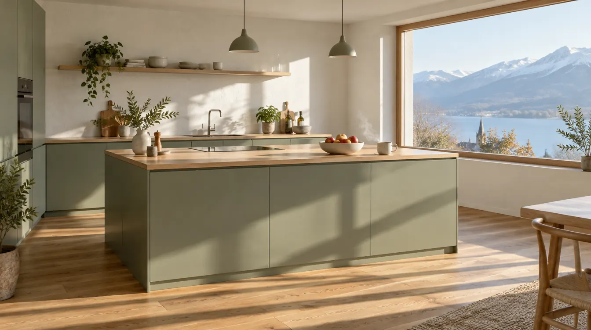
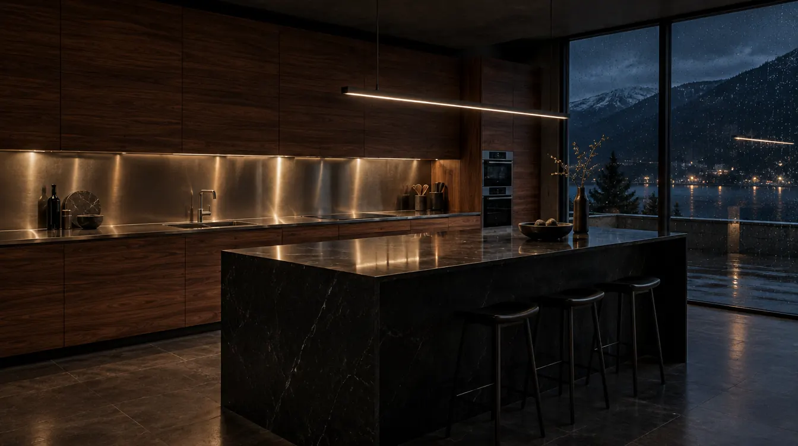
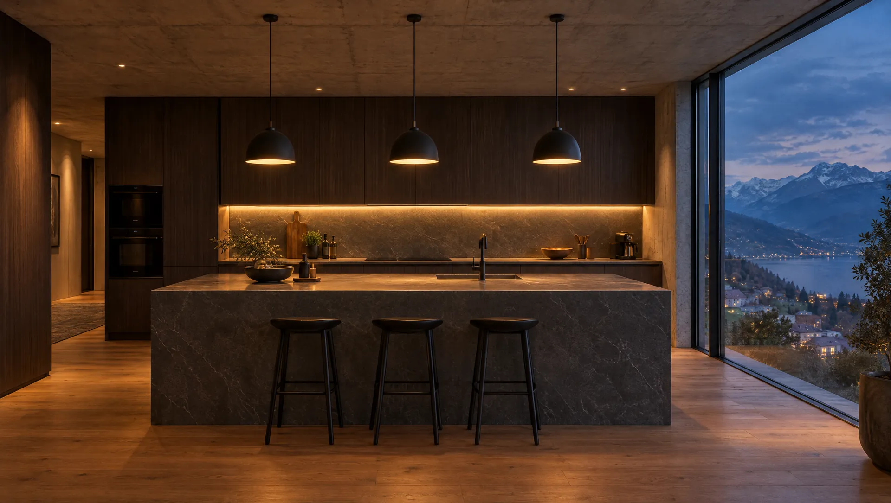

Mach das Licht an.Jede dritte Küche im Land kommt von hier.
Morach Küchen AG, seit 1952Gebaut in Däniken, geplant für deinen Raum. Scroll, und du siehst, was wir damit meinen.
Fahr über ein Material, und du stehst davor. In der Ausstellung in Däniken liegt jedes als Muster auf dem Tisch, geölt, lackiert, gebürstet.



Ausstellung Däniken, Montag bis Samstag. Bring deinen Grundriss mit, oder einfach ein Foto. In einer Stunde weisst du, was deine Küche kostet.